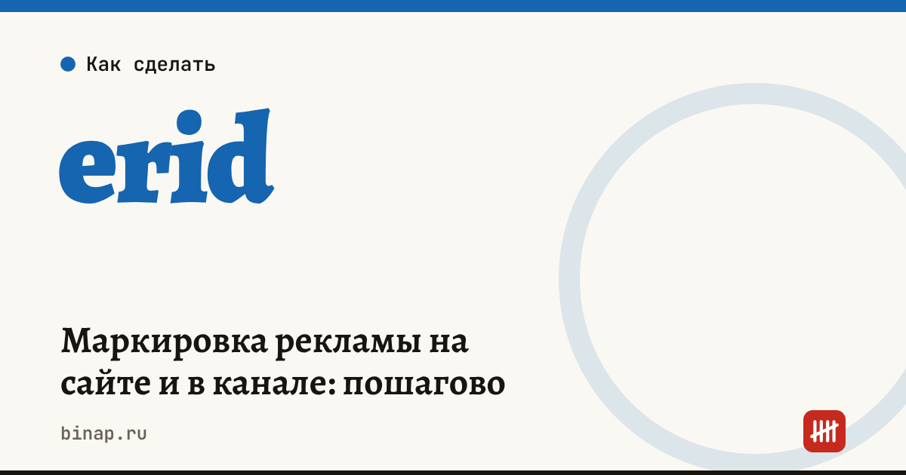

Маркировка рекламы на сайте и в канале: пошагово

Реклама в интернете — посты, баннеры, обзоры и партнёрские ссылки — должна быть маркирована: пометка «Реклама», указание рекламодателя и токен erid. Токен выдаёт оператор рекламных данных (ОРД), а сведения о рекламе передаются в единый реестр интернет-рекламы (ЕРИР). Для вебмастера с партнёрками обычно проще всего получать erid через партнёрскую сеть — но проверить, что маркировка стоит на каждой публикации, всё равно должен он сам.
Коротко
- Маркировать нужно рекламу: материалы, которые привлекают внимание к конкретному товару, услуге или компании и продвигают их.
- В рекламе должны быть пометка «Реклама», рекламодатель (наименование или сайт с информацией о нём) и erid.
- Токен erid выдаёт ОРД — напрямую или через рекламную либо партнёрскую сеть, с которой вы работаете.
- Данные о показах и договорах передаются в ЕРИР через ОРД; сроки отчёта назовёт ваш ОРД или сеть.
- Без маркировки — риск штрафа для распространителя рекламы и рекламодателя.
Сроки, изменения и разборы для ИП и самозанятых — каждое утро в Telegram и MAX. Подпишитесь, чтобы не пропустить.
Кто за что отвечает
| Участник | Что делает |
|---|---|
| Рекламодатель | компания, чей товар рекламируют; заключает договор, даёт креатив |
| Партнёрская или рекламная сеть | посредник, часто сама получает erid для своих офферов |
| Вебмастер или владелец канала | размещает рекламу с пометкой, рекламодателем и erid, отчитывается о показах |
| ОРД | выдаёт токены и передаёт данные в ЕРИР |
Пошагово
- Определите, реклама ли это. Обзор с партнёрской ссылкой на конкретный товар — реклама. Полезная статья без продвижения конкретного продавца — нет.
- Узнайте, кто получает erid. В большинстве партнёрских сетей токен выдаётся в кабинете вместе с партнёрской ссылкой. Если сеть этого не делает — нужен договор с ОРД и самостоятельная регистрация креатива.
- Добавьте маркировку в публикацию. Пометка «Реклама», рекламодатель и erid — рядом с рекламой: в начале поста, на баннере или рядом со ссылкой. В ссылку токен обычно добавляется параметром.
- Отчитывайтесь о показах. Если вы сами работаете с ОРД — передавайте статистику показов в срок, который установит ОРД. Если работаете через сеть — уточните, что передаёт она, а что вы.
- Храните документы: договоры, акты, скриншоты публикаций с маркировкой.
Чек-лист для каждой публикации
- [ ] Есть пометка «Реклама».
- [ ] Указан рекламодатель: наименование или сайт с информацией о нём.
- [ ] Есть erid — в ссылке, на баннере или в тексте.
- [ ] Креатив совпадает с тем, на который получен токен.
- [ ] Понятно, кто передаёт статистику показов — вы или сеть.
Как считать, сколько приносит трафик с партнёрок, — в калькуляторе дохода с трафика. Особенности рекламы в Telegram — в разборе реклама в Telegram. Все шаги — в разделе «Вебмастерам».
Частые вопросы
Нужно ли маркировать партнёрские ссылки? Если ссылка продвигает конкретный товар или продавца — да, это реклама. Партнёрские сети обычно выдают erid вместе с партнёрской ссылкой; проверьте это в кабинете сети.
Можно ли маркировать рекламу задним числом? Токен нужно получить до публикации. Если реклама вышла без маркировки, обратитесь в ОРД или сеть и уберите публикацию до исправления — оценивать последствия лучше с юристом.
Самозанятый может размещать рекламу? Да. Маркировка обязательна независимо от формы — самозанятый, ИП или ООО.